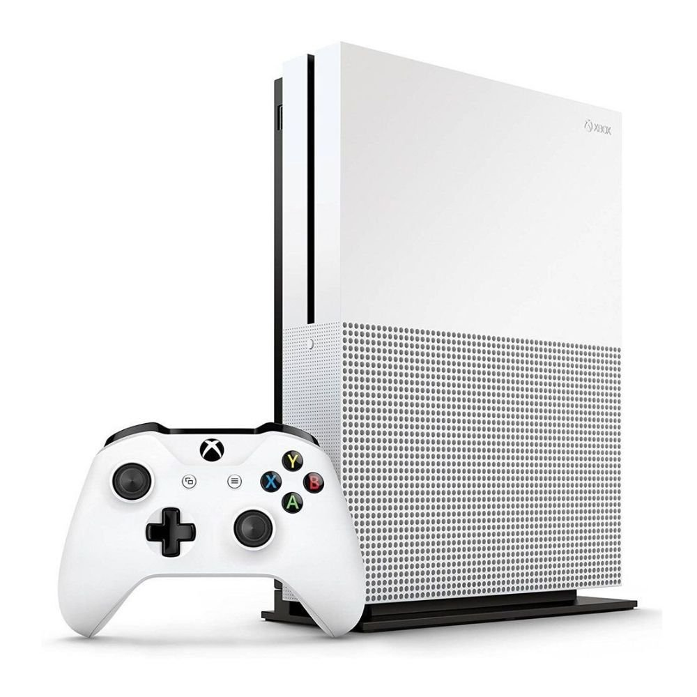
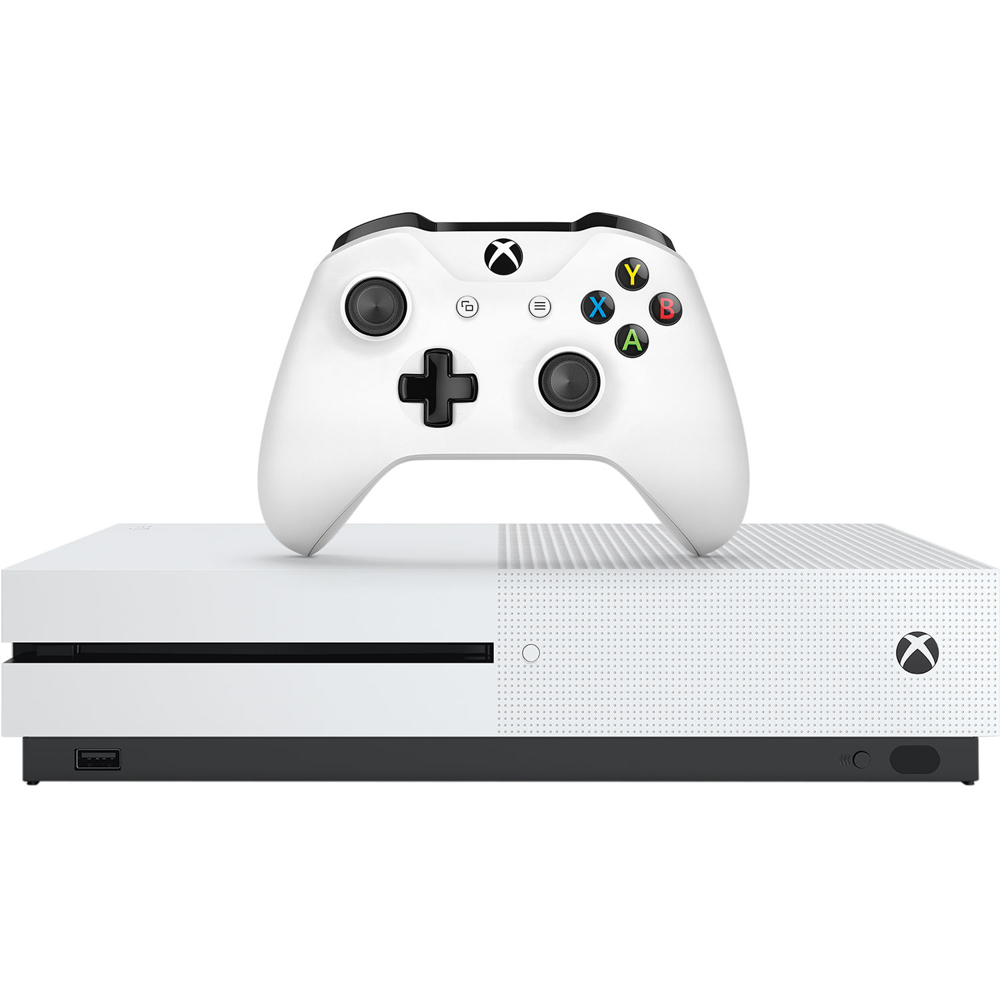

O modelo original do Xbox One foi sucedido pelo Xbox One S em 2016, que possui dimensões reduzidas e suporte para vídeo de alto alcance dinâmico HDR10, além de suporte para reprodução de vídeo em 4K e aprimoramento da resolução de jogos de 1080p para 4K.
 Em 13 de junho de 2016, durante a E3, a Microsoft anunciou o Xbox One S, uma versão mais compacta do Xbox One. Agora o console é branco, 40% menor que o design original e pode ser colocado na vertical em sua versão de 2TB. Os botões liga/desliga e o de ejetar não são mais soft touch, mas sim físicos, o novo modelo não possui mais a fonte externa, que agora fica dentro do console, a entrada para o Kinect também foi retirada, assim será necessário adquirir separadamente um adaptador USB para poder fazer uso do periférico de captura de movimento. Existem versões de 2 TB, 1TB e 500gb.